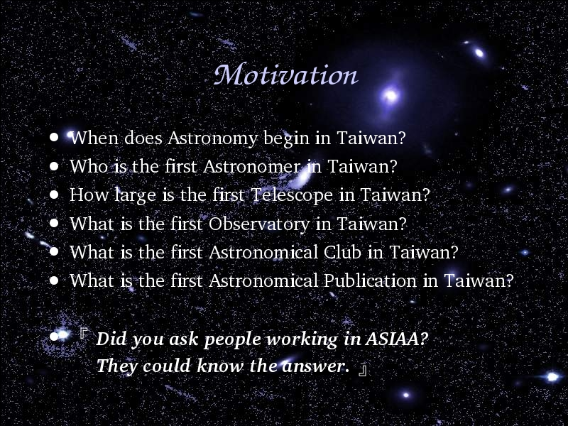

Voice Over:
My motivation of this project is very simple, can anyone tell me the answer of those questions before you read my article?
I did not know those answers, and can not find any answer from website, there is no book discuss about these questions.
When I try to ask some people working in government deaprments, most people ask me,
"Did you ask people working in ASIAA? They could know the answer."
Right! ASIAA has responsibility to all Taiwanese to find out those answers.